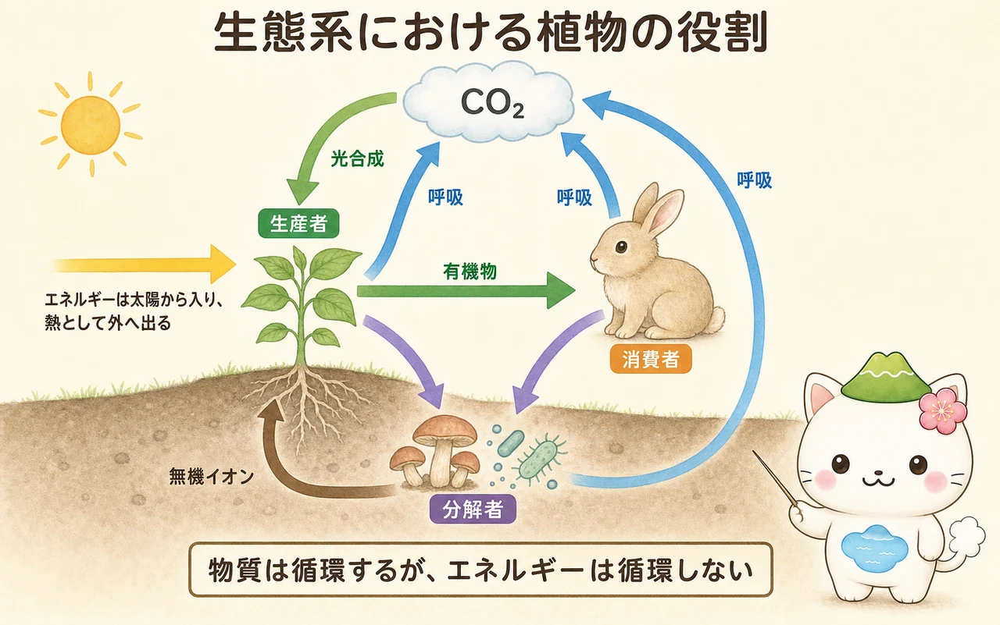

系統樹で植物を見る
分類は、見た目が似ているかだけでなく、共通祖先から枝分かれした歴史をもとに考えます。系統樹では、枝分かれする点が共通祖先を表し、より最近の共通祖先をもつグループほど近縁です。枝の左右の並びや、枝の長さだけで「進化の順番」や「優劣」を判断してはいけません。
陸上植物は、現生の緑藻類の一部と共通祖先をもつと考えられています。ただし、現在生きている緑藻が陸上植物の直接の祖先という意味ではありません。水辺に近い祖先集団から分かれた系統の一部が、乾燥・重力・紫外線・水や配偶子の移動という課題に対応し、陸上で多様化しました。
陸上生活への適応
陸上で生きるには、水を失いすぎず、二酸化炭素は取り入れ、体を支え、体内で水を運び、子孫を残す必要があります。植物の進化では、こうした課題に対する複数の仕組みが組み合わされました。
- クチクラ：地上部の表面を覆い、水分の蒸発を抑えます。
- 気孔：二酸化炭素を取り入れながら、水蒸気の放出を調節します。
- 維管束：木部と師部によって水・無機イオン・有機物を運び、体を大きくすることを可能にします。
- 花粉と種子：受精を自由水に頼らずに行いやすくし、胚を保護して養分を与えます。
- 花と果実：受粉と種子散布に、動物・風・水などを利用する多様な方法を生みます。


「コケ → シダ → マツ → 花」の一本道ではないよ。図の先端にいるのは、どれも今も生きている別々の系統。系統樹は家系図のように枝分かれを読むんだ。
コケ・シダ・種子植物の特徴
コケ植物は、一般に維管束をもたず、配偶体が目立ちます。精子が卵へ到達するには水が必要なため、湿った環境と結び付くことが多い植物です。シダ植物は維管束をもち、胞子体が目立ちますが、生殖ではやはり水を必要とします。葉の裏などにつくられる胞子のうから胞子を放出します。
種子植物では、花粉が雄性配偶体を運び、胚珠の中の雌性配偶体へ精細胞を届けるため、受精が自由水に大きく依存しません。裸子植物は胚珠が子房に包まれておらず、マツやスギなどでは球果に種子ができます。被子植物では胚珠が子房に包まれ、受精後に子房が果実へ発達します。
被子植物は、単子葉類・真正双子葉類などを含む大きなグループです。しかし「花びらが何枚」「葉脈が平行か網状か」だけで、すべての種を完全に決められるわけではありません。分類では、形態だけでなく、DNA配列などの情報も用いて系統関係を確かめます。
根と微生物の共生
根は土から一方的に水や養分を吸う器官ではありません。多くの陸上植物は、根と菌類が共生する菌根をつくります。菌類の菌糸は根の外へ広がり、根だけでは届きにくい土のすき間から、水やリン酸などの無機養分を集めることがあります。植物は光合成でつくった有機物の一部を菌類へ渡します。双方に利益があるとき、この関係は相利共生として働きます。
マメ科植物の根にできる根粒では、根粒菌が窒素固定を行います。大気中の窒素分子（N₂）は結合が強く、多くの植物はそのまま利用できません。根粒菌は酵素を使い、窒素分子をアンモニアへ変えます。植物はそこから窒素化合物を受け取り、アミノ酸や核酸などをつくります。窒素固定には大きなエネルギーが必要であり、植物側からの有機物の供給がこの共生を支えます。
生態系の物質循環と一次生産
植物は、光合成によって無機物から有機物をつくる生産者です。大気の二酸化炭素は光合成で有機物に固定され、植物自身の呼吸、動物の呼吸、微生物による分解を通じて、再び二酸化炭素として環境へ戻ります。枯れ葉や死骸に含まれる有機物は分解者によって無機イオンへ戻り、根から再び植物へ取り込まれます。
ここで物質は循環するが、エネルギーは循環しないことを区別します。太陽光のエネルギーは、光合成で有機物に蓄えられ、食物連鎖を通る間に呼吸で熱として外へ出ます。生態系に新しく入るエネルギーは主に太陽光であり、同じエネルギーが何度も回るわけではありません。

ある地域・期間に生産者が光合成で固定した有機物の量を総一次生産量といい、そこから生産者自身の呼吸量を引いたものを純一次生産量といいます。純一次生産量は、植物の成長や貯蔵に使われ、草食動物や分解者が利用できる有機物の基盤になります。森林伐採、土地利用の変化、気候変動、窒素やリンの過剰流入は、この生産と循環の仕組みに影響します。
この冊子の要点
- 系統樹は、共通祖先からの枝分かれを読む図であり、現生生物の優劣を並べる図ではありません。
- 陸上植物は、クチクラ・気孔・維管束・花粉・種子などを組み合わせて、乾燥と生殖の課題に対応してきました。
- 菌根菌や根粒菌との共生は、根の養分吸収と窒素利用の可能性を広げます。
- 植物は生産者として有機物をつくり、物質循環とエネルギーの流れの出発点を担います。